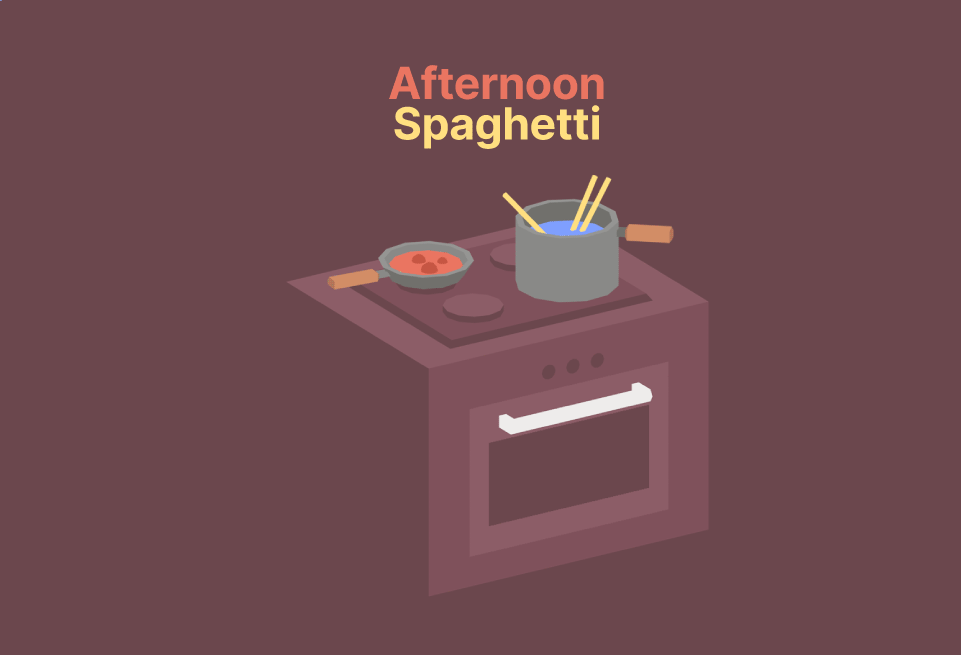
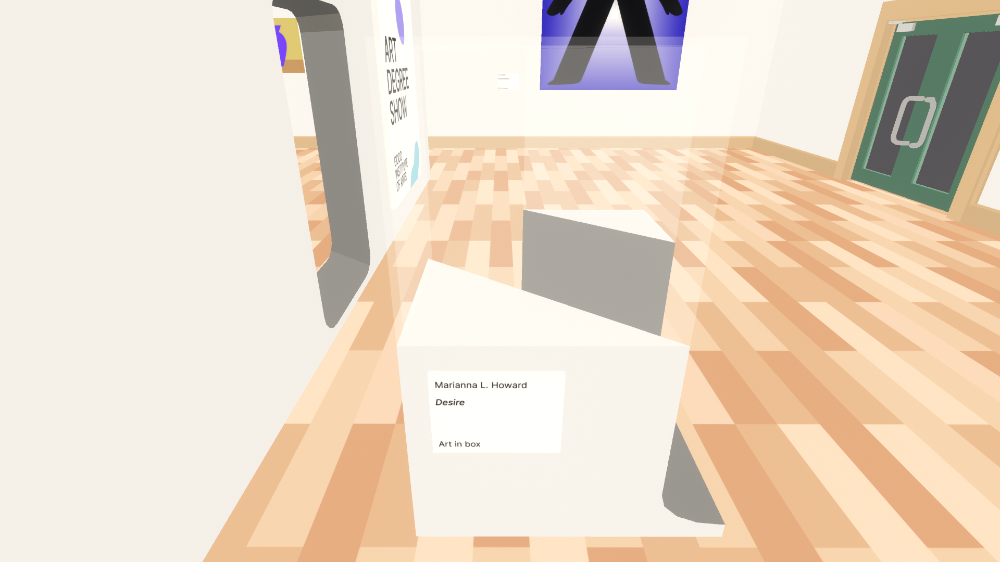
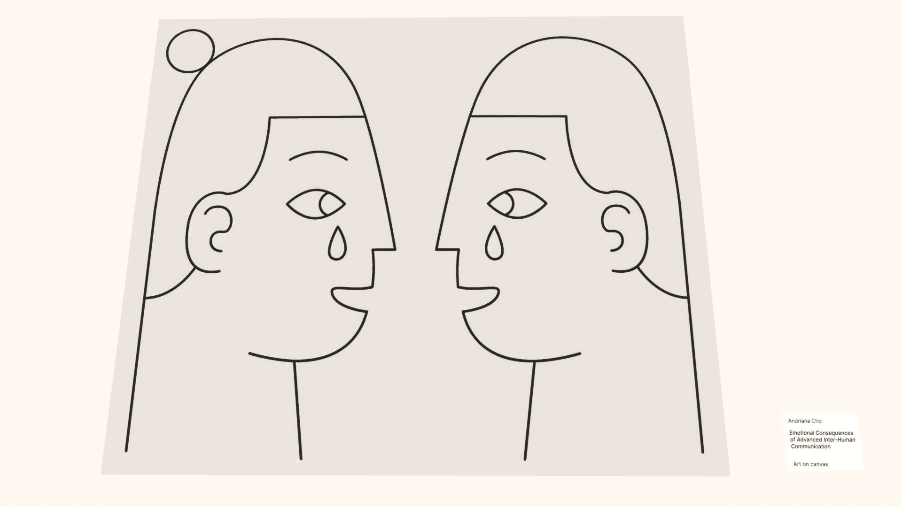
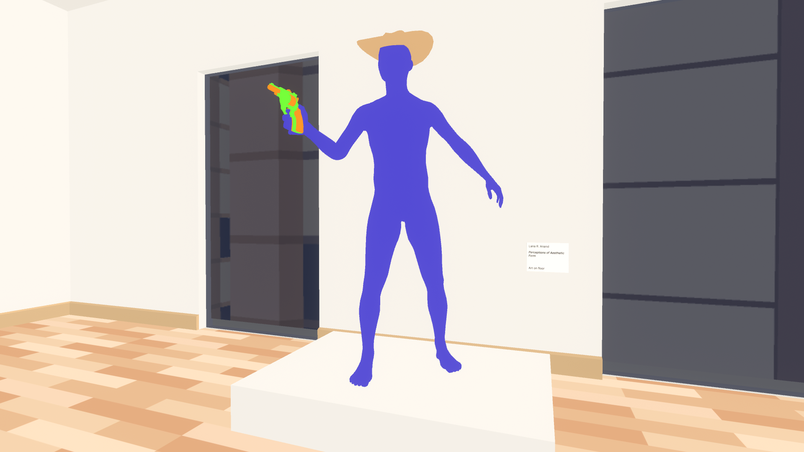
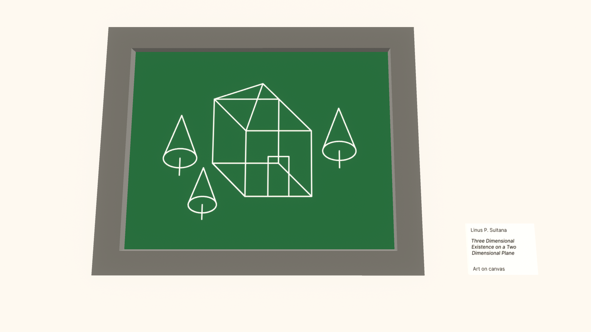

Afternoon Spaghetti Truly Is a Game
The classic tale of cheese, goodwill and transdimensional fridge theft
This game is a masterpiece.
Before you get any further, I highly recommend playing the game here. It's impossible to say much else without spoiling the entire thing, so here's an excerpt from the description:
This game only takes a few minutes to complete and is best enjoyed with a refined sense of humour.
This Game Is a Piece of Art
No, literally.
When I went back to Afternoon Spaghetti's itch.io page, I noticed something that many others like me probably missed: This game was featured at not one, but two art expos. In Crawley 2023, it was in the Pop Up Arcade at Dreamy Place. In Lyon 2025, you could find it at L'exposition interactive, Sauve qui peut la vie #2. While I don't know much about either of these events, just learning this fact has shifted my perspective of the game. It's not just a really high effort joke, it's an exploration of comedy through the medium of video games. During my first playthrough of Afternoon Spaghetti, my attitude towards was the former perspective. But sometimes all you really need to start thinking about something is for somebody else to tell you that that thing is worth thinking about. In other words, the only reason I even started thinking about this game was because somebody said it was art. And is that not a beautiful way to discover art?
This Game Is a Farce
As far as I'm aware, "transdimensional" is not a word.
At first, I assumed that the writer meant "interdimensional", as in between dimensions. This fits with the non-Euclidean gimmick of walking to a student art show through a refrigerator. "Transdimensional", on the other hand, would mean across dimensions, which granted, could definitely be a word, but I've never heard it before. Regardless, this implies that the art show actually exists in another dimension. This is supported by the differing aesthetics of the art show world, which raises some interesting questions about the game's lore. Why does the fridge lead to other dimensions? Why are the contents of a fridge considered art? Who is Lilli Hampson and why did she steal this particular fridge? None of these questions actually matter, because the game as a whole isn't meant to be taken seriously. In the credits, there isn't even a name on the title card for editor. The entire game serves as setup for a single joke. And then the credits start rolling. If you rushed to complete the game's one objective, then you just missed the entire game. And then you can't help but laugh.
So why is this game so funny? I think it mostly comes down to subversion of expectations. Most video games usually last longer than 2-5 minutes, and have obstacles which are dealt with through gameplay. Afternoon Spaghetti, on the other hand, tries to distract the player with its jokes. When you ignore the distractions, you think you are outsmarting the game by accomplishing its objectives faster, but it turns out there's only one objective, so you end up feeling silly for missing the forest for the trees. Trying to optimize this game will take all of the fun out of it, because it wants you to slow down and appreciate all of the jokes.
This Game Is a Short Film
Afternoon Spaghetti really isn't much more than a walking simulator.
There isn't anything to do besides look around and find the cheese. Your dialogue is chosen for you, and each interaction will play out identically each time you boot up the game. The world is bright and colorful, and is only there to serve as eye candy while you walk towards Lilli Hampson's Someone's Fridge. The game starts with a title and ends with credits. Your actions now won't affect the game later. In this way, you are taken out of the game and are relegated to the position of audience member. The story of Afternoon Spaghetti is constant, and could care less about its viewer. Nothing you can do or say will prevent the inevitable end of the game.
The game does feature two songs, "Hey" by Juanitos, which serves as the main theme, as well as "Tropicana Dreams" by Apache Tomcat, which you might hear during the game if you listen closely. For me, "Hey" captures the feeling of falling for a lighthearted joke, similar to getting rickrolled. On the other hand, "Tropicana Dreams" sounds much more nostalgic, and would definitely be playing in a 7-Eleven after time traveling back to your childhood. Overall, these two songs fit well with the gameplay, but aren't super memorable.
This Game Is an Art Show
Despite not being attributed to real people (as far as I know), the art pieces definitely feel realistic. Here are some standout pieces:
Desire by Marianna L. Howard
Desire happens to be one of the victims of Lilli's transdimensional fridge theft, which is also why it's one of my favorites. The tag says "Art in box", but we will never know if there was actually anything in the box because Someone's Fridge cut right through the center of it. Perhaps our innermost desires aren't meant to known, instead they should be hidden behind refrigerators and cut off from existence. Another possible interpretation is that we shouldn't put our desires inside of boxes, rather we must cherish them so nobody can take them away. I think it's great that we don't know what Desire actually is because it leaves a lot more room for interpretation.
Emotional Consequences of Advanced Inter-Human Communication by Andriana Cho
This drawing appears to be telling a story, perhaps of two long-lost lovers reunited at last. The smile in each face seems to imply that these tears are tears of joy. It's not exactly clear what "advanced inter-human communication" means. My best guess is that it's referring to non-verbal communication, the things which are said but not spoken. Indeed, some of our biggest emotions come from actions, rather than words. But is spoken language not an advanced form of communication? After all, learning a new language is far from a trivial task, oftentimes it takes several years to truly master a language. I wonder what consequences language has on our emotions.
Perceptions of Aesthetic Form by Lana R. Anand
Perceptions of Aesthetic Form definitely feels out of place when compared to the rest of the art show (besides Someone's Fridge). The blue figure, cowboy hat, and toy gun all form one coherent idea, yet lack a coherent style. The whole statue ends up looking like an unfinished shot from a movie. Similarly, the excessive use of artistic jargon in the name obfuscates whatever message is trying to be conveyed by the art. To put it simply, Perceptions of Aesthetic Form doesn't mean anything to the average person. I believe this piece is a parody of modern art, so confusion is the intended effect, which actually means that this piece is incredibly effective at accomplishing its goal.
Three Dimensional Existence on a Two Dimensional Plane by Linus P. Sultana
This piece is by far the most meta out of all of the art in this game. First of all, it's being displayed in an art show, and the game itself was in an art show. (I don't know if this game was actually made for an art show, or if this is just a coincidence.) It depicts the house from the beginning of the game in an isometric perspective, turning what was once a 3D world into a 2D image. However, the game itself is a 3D world being projected onto a 2D screen. In essence, this picture is a 2D representation of a 3D model being displayed on a 2D screen within a 3D game. Interestingly, if you go back inside the house you can find a 2D frame with some 3D shapes inside. I like how the frame and background together look like an old CRT. It's almost as if the game knows it is being seen on a computer screen. I'm not sure how I feel about art with this level of self awareness.
This Game Is a Video Game
Afternoon Spaghetti really is one of the video games of all time, if not the last decade.
This game could've just as easily been a film or a painting or a novel, but it's a video game. There wasn't a rule that said this game had to be a video game, but it is. The developers could have told you the joke in a few sentences, but instead the joke was told in hundreds, if not thousands, of lines of code. It's almost inspiring how so much effort was put into one, singular pun. There's a awkward disconnect between the player and the game, because the player wants to be put in the world of the game, however the game is actively limiting your agency and trying to push you out. It's a little bit ironic that an interactive medium was chosen for a game with very little interactivity. But somehow, the game succeeds at putting you in exactly the situation that it wants you to be in, between these two opposing forces. This crafts the perfect experience for the game to tell its joke in the most interesting way possible. An experience like this wouldn't be possible in another medium.
This game is a masterpiece.